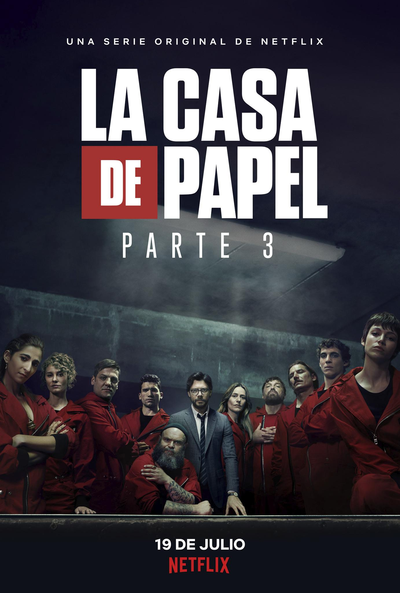

This article is about the heist crime drama. For the media franchise, see Money Heist (franchise). For the South Korean remake, see Money Heist: Korea – Joint Economic Area.Money Heist (Spanish: La casa de papel, [la ˈkasa ðe paˈpel], lit. 'The House of Paper') is a Spanish heist crime drama television series created by Álex Pina. The series traces two long-prepared heists led by the Professor (Álvaro Morte), one on the Royal Mint of Spain, and one on the Bank of Spain, told from the perspective of one of the robbers, Tokyo (Úrsula Corberó). The story is told in a real-time-like fashion and relies on an unreliable narrator, flashbacks, time-jumps, and hidden character motivations for complexity.
Seasons
Season-1
Episode-1
1. Berlin's Wedding
The Professor recruits a young female robber and seven other criminals for a grand heist, targeting the Royal Mint of Spain.
Episode-2
2. Anatomy Lesson
Hostage negotiator Raquel makes initial contact with the Professor. One of the hostages is a crucial part of the thieves' plans.
Episode-3
3. The Paris Plan
Police grab an image of the face of one of the robbers. Raquel is suspicious of the gentleman she meets at a bar.
Season-2

Episode-1
1. Everything Seemed Insignificant
As forensic experts comb the Toledo country house for DNA, the Professor loses control. Inside the Mint, the robbers' nerves reach a breaking point.
Episode-2
2. Boom, Boom, Ciao
The police interrogate the first robber to be captured. Furious over Berlín's recent actions, Río takes a stand against him.
Episode-3
3. It's Dolphin Time
Hoping to learn the Professor's identity, Raquel appeals to her captive's emotions. A punishment for "high treason" sparks a revolt among the robbers.
Season-3

Episode-1
1. We're Back
When Río is captured, a distraught Tokyo turns to the Professor for help. Armed with a bold new plan, they reunite the team in order to rescue him.
Episode-2
2. Aikido
The Professor recruits Martín to put his brother's plan into action and target the Bank of Spain. First step? Create total chaos.
Episode-3
3. 48 Meters Underground
Tokyo and Nairobi's efforts go drastically awry. The Professor recalls Berlín detailing how they'd steal the gold from the water-logged vault.